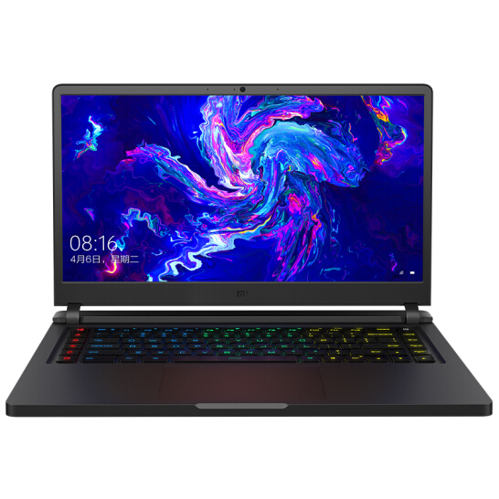

Xiaomi Mi Notebook Pro Laptop Thin and Light 15.6 Inch i7-8550U 16GB DDR4 256GBSSD Windows10 MX150 Backlit Keyboard Fingerprint Re
Xiaomi Pro notebook--more powerful professional but thin laptop. 15.6" full HD screen, super narrow edge brings you broad vision and offers you an excellent surfing experience. With its Intel i7-8550U processor, this thin and light laptop takes you further — giving you an always on, always connected surfing experience. 256GB SSD and a SSD slot reserve to expand capacity for serviceable file storage space: satisfies your growing need for collection of digital photos, music and videos. Harman Infinity Customized Loudspeaker and Dolby Atmos gives you an enjoyable feeling across music, movies, and games
Price:$559.00
|